In continuous-time systems there are four generic codim 2 bifurcations that can be detected along
a fold curve:
- Bogdanov - Takens. We will denote this bifurcation by BT
- Zero - Hopf point, denoted by ZH
- Cusp point, denoted by CP
- Branch point, denoted by BP
To detect these singularities, we first define 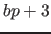 test functions, where 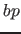 is the number of branch parameters:
- 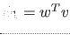 (cf. formula (39))
-
-
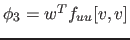
-
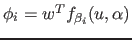
In these expressions 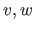 are the vectors computed in (56) and(57) respectively, is the bialternate matrix product, 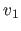, 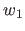 are
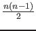 vectors chosen so that the square matrix in (58) is non-singular, and
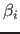 (branch parameters) are components of 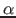.
The singularity matrix for 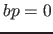 is:
The number of branch parameters is not fixed. If the number of branch parameters is 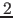 then this matrix has two more rows and columns. This singularity matrix is automatically extended:
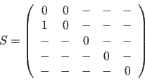